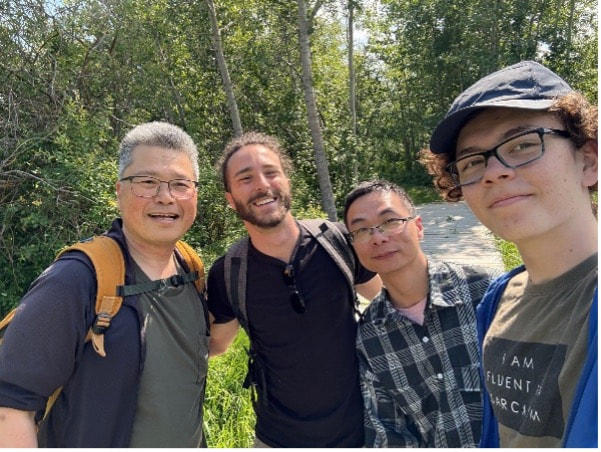

I'm sitting here at the airport in Edmonton after five weeks in Canada, reflecting on everything I experienced and I felt the need to write it down. So here we are.
My first time in Canada went by in the blink of an eye. I spent the first three weeks working on my thesis and ongoing projects at the University of Alberta, where Shinichi and his new team kindly welcomed me. I had the chance to grab a couple of beers with Santi and Erick, and we ended up having some deep, fascinating conversations about the future of AI in academia and beyond, mixed in with the occasional lighter banter. Time was limited, but enough to realise they’re both great guys and brilliant scientists. Their minds are open and sharp, the way a scientist’s mind should be.
Edmonton is ok. It reminded me a lot of an average U.S. city: big parking lots, fast food chains everywhere, and footpaths clearly not designed for pedestrians. Still, there were highlights. One day, Shinichi, Yefeng, Toto, and I went for a hike in Elk Island, where we saw a couple of bison from a distance. Man, their heads are massive!

From the left: Shinichi, me, Yefeng, and Toto during the hike in Elk Island.

A bison minding its own business (look how big its head is!).
I also learned a lot about Edmonton thanks to a memorable chat with my Uber driver, Nwabueze. He’s a Nigerian guy, a little older than me, who picked me up from the airport. After the usual chit-chat, he told me how he left Nigeria six years ago, not because things were bad, but because he wanted to open his mind and challenge himself. Among many interesting stories, he explained to me how incredibly cold it gets here in winter, how diesel fuel requires antifreeze additives during the colder months, and why so many windshields are cracked (spoiler: they put rocks on the roads to improve traction on ice). “It’s tough during winter,” he said. I believe him.
The University of Alberta was good, although very quiet. After those three weeks of work, my girlfriend and I set off on a road trip from Edmonton to the Rockies (Jasper and Banff NPs), down to Vancouver and Vancouver Island, and then back. About 4,500 km through the wilderness of western Canada.
The Rockies are absolutely stunning. Nature, landscapes, and alpine lakes that really take your breath away. Sadly, a large portion of Jasper burned last summer in a devastating wildfire. Driving and walking through the scorched land, where everything felt lifeless and silent, was surreal. A local in Jasper told us the cause of the fire is still uncertain, possibly a cigarette, lightning, or a mix of both. We spent three days there and hiked a couple of beautiful trails in the areas that hadn't burned. We saw squirrels, chipmunks, and even wild goats.
From Jasper, we took Highway 93 south toward Banff. That drive alone is worth the trip. The beauty is hard to put into words, so here’s a picture to help you imagine it.

The 93 road from Jasper to Banff.
We were lucky enough to spot a couple of American black bears along the way. It was amazing to see them roaming freely in their natural environment, minding their own business. In Banff, we stayed five days and visited the iconic Lake Louise and Moraine Lake. We also ventured into the nearby Yoho and Glacier National Parks. There, we saw elk and what I think was a marmot (but don’t quote me on that).

A black bear minding its own business.
We did several incredible hikes, always carrying a bell to make noise (so grizzly bears know you're around) and a can of bear spray, which is mandatory for many trails. Unfortunately, or maybe fortunately, we didn’t see any grizzlies. I guess the bell worked.
After immersing ourselves in the mountains, we headed to Vancouver and Vancouver Island. We had a great impression of Vancouver: good vibes, tasty food, pretty skylines, and hidden gems tucked around the city. To reach Vancouver Island, we took a car ferry that crosses over in a couple of hours. Tofino was the highlight, a little village full of personality.

Glamping domes and a fishery building in Tofino.
If I had to point out one downside to the trip, it would be the food. In Canada, decent quality food, what you'd consider average elsewhere, comes at a steep price. Many people resort to fast food a few times a week, and overall, Canada doesn’t really shine in the culinary department. Not that it was a surprise, considering some of the national staples are ketchup Lay’s chips and poutine (French fries with cheese curds and gravy).
So now it’s time to fly back to Sydney, slightly tired, definitely inspired, and maybe still craving real food. Canada surprised me in many ways, some good, some weird, and all worth it. I’m already looking forward to my next adventure (New Zealand in about 20 days!), but for now, I’ll just sit here with my Tim Hortons coffee and say: thanks, Canada. It was a wild ride.